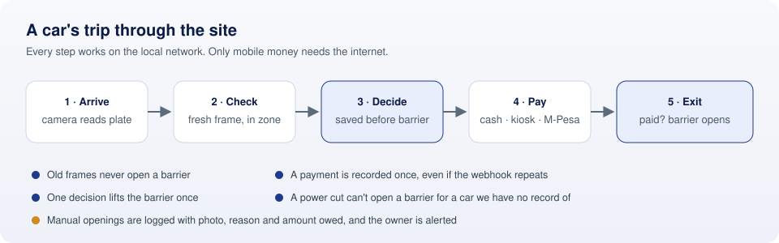
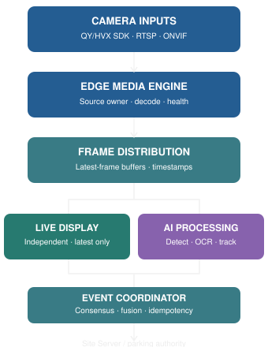

Zirp parking system
Number-plate cameras, barriers, cash and mobile money in one system that runs on your site's own network. If the internet goes down, the car park keeps running.
Download
One installer for every computer on the site: server, lane PC, cashier desk and payment kiosk. You choose the role while installing.
Zirp-Setup-1.0.0-rc4.exe
Previous versions are on the releases page. To check the file after downloading, compare its hash with the one above:
Get-FileHash .\Zirp-Setup-1.0.0-rc4.exe -Algorithm SHA256The installer isn't code-signed yet, so Windows may show "Unknown publisher". Check the hash, then choose More info → Run anyway.
Already have a Site Server running? Other PCs on the site can download the
installer from it, no internet needed:
http://<site-server>:8760/downloads/zirp-setup.exe
What Zirp does

Reads plates
From the camera's own reader, Zirp's model, or both. Tuned for T123ABC plates.
Opens barriers safely
A decision is saved before the barrier moves. One decision lifts it once.
Takes payment
Cash, kiosk, and M-Pesa, Mixx by Yas, Airtel Money and HaloPesa through ClickPesa.
Tells the owner
Hand-opened barriers are logged with photo and amount owed, and sent by SMS or email.
Knows the regulars
Company fleets, family cars sharing one place, visitor passes.
Recovers on its own
Services restart, cameras reconnect, failed updates roll back.
Install
- Install PostgreSQL on the Site Server and create a
smartparkdatabase and login. How → - Run
Zirp-Setup-<version>.exeas administrator. - Pick what this computer does (see roles).
- Wait for the installer to start the services and check they're healthy.
- Open Zirp from the Start menu. The setup wizard connects the database and creates the first administrator.
Program files go to C:\Program Files\Zirp. Settings, the database
connection, photos and backups live in C:\ProgramData\SmartParkEdge
and survive updates.
IT departments can install silently:
Zirp-Setup-1.0.0-rc4.exe /VERYSILENT /ROLE=OPERATORUpdate or repair
Run the new installer on a PC that already has Zirp. It asks what you want:
| Choice | What happens |
|---|---|
| Update (recommended) | Keeps the role and settings, backs up the database, installs the new version beside the old one and switches over. |
| Repair | Shown when you run the same version again. Puts the program files back. |
| Change role or options | Shows the role pages again, then updates. |
If the new version doesn't come up healthy, the installer switches back to the old one by itself. To go back by hand:
& "C:\Program Files\Zirp\bin\zirpctl.ps1" rollbackComputer roles
| Role | Runs | Use it for |
|---|---|---|
| Site Server with cameras and gates | Everything | A small site with one PC |
| Site Server only | API, decisions, payments, portal | The central server when lanes have their own PCs |
| Edge Node | Cameras, recognition, lane control | A PC wired to a lane's cameras and barriers |
| Operator Workstation | Desktop app | Cashier and supervisor desks |
| Payment Kiosk | Full-screen kiosk | The driver's pay station |
Cameras
Add cameras in Live Gates → Devices: click Discover or type the IP, choose the direction and gate, then Test Video, Test Recognition and Save Camera.
Supported: QY/HVX LPR cameras (vendor SDK), ONVIF cameras and any RTSP camera. Each camera has exactly one reader, and recognition only ever uses fresh frames.
Use Settings → Camera calibration to draw the zone, start and end lines and minimum plate size, so cars in the next lane never open your barrier.
Full camera guide: connecting, calibration, troubleshooting →
Barriers and loops
The decision and a barrier command with its own ID are saved together before the barrier is told to move. After a power cut, an unanswered command shows up as interrupted for an operator instead of being re-sent. Ground-loop boards talk to Zirp on UDP port 8000.
Barriers, manual opening and alerts → · Loop board protocol →
Payments
The server always computes the amount. Each mobile-money payment is recorded once, even if ClickPesa sends the webhook twice. Keys alone don't collect money: real collection has to be switched on separately, so a test setup can't charge anyone.
Database and backups
PostgreSQL on the Site Server is the single source of truth. Migrations run by themselves on start. Every update takes a backup first, and a restore either completes fully or changes nothing.
& "C:\Program Files\Zirp\bin\zirpctl.ps1" backup -Label manualServices and logs
| Service | Port |
|---|---|
SmartParkSiteService: API, decisions, payments, alerts | TCP 8760 |
SmartParkMediaService: camera streams, live video | TCP 8889, 8189 |
SmartParkRecognitionWorker: plate recognition | — |
SmartParkHvxHost: QY/HVX camera SDK | local 8765 |
SmartParkPortal: back office and pay page | TCP 3000 |
Health: http://<server>:8760/health/pipeline shows frame age and
reconnects per camera. Logs: C:\ProgramData\SmartParkEdge\logs.
Troubleshooting
| Problem | First thing to check |
|---|---|
| Camera picture is black | Ping it, check the login, and close VLC or the vendor tool if it's open on the same camera. |
| Live view works but no plates | Calibration test mode tells you which rule refused the read. |
| Update failed | C:\ProgramData\SmartParkEdge\logs\install\last-error.txt. The old version is already running again. |
| Barrier command "interrupted" | The PC lost power mid-command. Look at the lane and retry from the desktop. |
| Mobile money shows MOCK or LIVE_DISABLED | See "Switching on real money" in the payments guide. |
Architecture

Python services (FastAPI, SQLAlchemy, Alembic), a PySide6 operator desktop, a Next.js portal, ONNX Runtime for plates, MediaMTX and FFmpeg for video.
Build and test
git clone https://github.com/josiaO/ParkSystem.git
cd ParkSystem
python -m venv .venv && source .venv/bin/activate
pip install -r requirements-dev.txt
pytest -qBuild the installer on Windows:
powershell -ExecutionPolicy Bypass -File packaging\installer\build.ps1 -Version 1.0.0-rc5All guides
Installing and updating
Roles, updates, rollback, uninstall
Connecting cameras
Adding, calibration, troubleshooting
Barriers and loops
Safe opening, manual opening, alerts
Payments
Cash, kiosk, ClickPesa
Linked vehicles
Fleets, family cars, visitor passes
Database
PostgreSQL, backups, restore
Running a site
Services, logs, recovery
Architecture
Design rules and code map